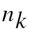

9
Simulator Functions
This chapter describes the Cadence® Verilog®-AMS language simulator functions. The simulator functions let you access information about a simulation and manage the simulation’s current state. You can also use the simulator functions to display and record simulation results.
For information about using simulator functions, see
- Announcing Discontinuity
- Bounding the Time Step
- Finding When a Signal Is Zero
- Querying the Simulation Environment
- Obtaining and Setting Signal Values
- Determining the Current Analysis Type
- Examining Drivers
- Implementing Small-Signal AC Sources
- Implementing Small-Signal Noise Sources
- Generating Random Numbers
- Generating Random Numbers in Specified Distributions
- Interpolating with Table Models
- Node/Net Aliasing System Functions
For information on analog operators and filters, see
- Limited Exponential Function
- Time Derivative Operator
- Time Integral Operator
- Circular Integrator Operator
- Delay Operator
- Transition Filter
- Slew Filter
- Implementing Laplace Transform S-Domain Filters
- Implementing Z-Transform Filters
For descriptions of functions used to control input and output, see
For descriptions of functions used to control the simulator, see
For a description of the $pwr function, which is used to specify power consumption in a module, see
For information on using user-defined functions in the Verilog-AMS language, see
Announcing Discontinuity
Use the $discontinuity function to tell the simulator about a discontinuity in signal behavior.
discontinuity_function ::=
$discontinuity[ (constant_expression) ]
constant_expression, which must be zero or a positive integer, is the degree of the discontinuity. For example, $discontinuity, which is equivalent to $discontinuity(0), indicates a discontinuity in the equation, and $discontinuity(1) indicates a discontinuity in the slope of the equation.
You do not need to announce discontinuities created by switch branches or built-in functions such as transition and slew.
Be aware that using the $discontinuity function does not guarantee that the simulator will be able to handle a discontinuity successfully. If possible, you should avoid discontinuities in the circuits you model.
The following example shows how you might use the $discontinuity function while describing the behavior of a source that generates a triangular wave. As the Triangular Wave figure shows, the triangular wave is continuous, but as the Triangular Wave First Derivative figure shows, the first derivative of the wave is discontinuous.
The module trisource describes this triangular wave source.
module trisource (vout) ;
output vout ;
voltage vout ;
parameter real wavelength = 10.0, amplitude = 1.0 ;
integer slope ;
real wstart ;
analog begin @(timer(0, wavelength)) begin slope = +1 ; wstart = $abstime ; $discontinuity (1); // Change from neg to pos slope end @(timer(wavelength/2, wavelength)) begin slope = -1 ; wstart = $abstime ; $discontinuity (1); // Change from pos to neg slope end V(vout) <+ amplitude * slope * (4 * ($abstime - wstart) / wavelength-1) ;
end
endmodule
The two $discontinuity functions in trisource tell the simulator about the discontinuities in the derivative. In response, the simulator uses analysis techniques that take the discontinuities into account.
The module relay, as another example, uses the $discontinuity function while modeling a relay.
module relay (c1, c2, pin, nin) ;
inout c1, c2 ;
input pin, nin ;
electrical c1, c2, pin, nin ;
parameter real r = 1 ;
analog begin @(cross(V(pin, nin) - 1, 0, 0.01n, pin.potential.abstol)) $discontinuity(0); if (V(pin, nin) >= 1) I(c1, c2) <+ V(c1, c2) / r ; else I(c1, c2) <+ 0 ;
end
endmodule
The $discontinuity function in relay tells the simulator that there is a discontinuity in the current when the voltage crosses the value 1. For example, passing a triangular wave like that shown in the Relay Voltage figure through module relay produces the discontinuous current shown in the Relay Current figure.
Bounding the Time Step
Use the $bound_step function to specify the maximum time allowed between adjacent time points during simulation.
bound_step_function ::= $bound_step ( max_step )
max_step ::= constant_expression
By specifying appropriate time steps, you can force the simulator to track signals as closely as your model requires. For example, module sinwave forces the simulator to simulate at least 50 time points during each cycle.
module sinwave (outsig) ;
output outsig ;
voltage outsig ;
parameter real freq = 1.0, ampl = 1.0 ;
analog begin V(outsig) <+ ampl * sin(2.0 * ‘M_PI * freq * $abstime) ; $bound_step(0.02 / freq) ; // Max time step = 1/50 period
end
endmodule
Announcing and Handling Nonlinearities
Use the $limit function to announce nonlinearities that are other than exponential. This information is used to improve convergence.
limit_call_function ::= $limit ( access_function_reference )
| $limit ( access_function_reference, string, arg_list)
| $limit ( access_function_reference, analog_function_ID, arg_list)
access_function_reference is the reference that is being limited.
string is a built-in simulator function that you recommend be used to compute the return value. In this release, the syntax of string is not checked.
analog_function_ID is a user-defined analog function that you recommend be used to compute the return value. In this release, the syntax of analog_function_ID is not checked.
arg_list is a list of arguments for the built-in or user-defined function. In this release, the syntax of arg_list is not checked.
$limit function is allowed, Cadence tools, in this release, do nothing with the information. Consequently, codingvdio = $limit(V(a,c), spicepnjlim, $vt, vcrit);
Finding When a Signal Is Zero
Use the last_crossing function to find out what the simulation time was when a signal expression last crossed zero.
last_crossing_function ::= last_crossing (signal_expression,direction)
Set direction to indicate which crossings the simulator should detect.
| If you want to | Then |
|---|---|
Before the first detectable crossing, the last_crossing function returns a negative value.
The last_crossing function is subject to the restrictions listed in “Restrictions on Using Analog Operators”.
The last_crossing function does not control the time step to get accurate results and uses interpolation to estimate the time of the last crossing. To improve the accuracy, you might want to use the last_crossing function together with the cross function.
For example, module period calculates the period of the input signal, using the cross function to resolve the times accurately.
module period (in) ;
input in ;
voltage in ;
integer crosscount ;
real latest, earlier ;
analog begin @(initial_step) begin crosscount = 0 ; earlier = 0 ; end
@(cross(V(in), +1)) begin
crosscount = crosscount + 1 ;
earlier = latest ;
end
latest = last_crossing(V(in), +1) ;
@(final_step) begin
if (crosscount < 2)
$strobe("Could not measure the period.") ;
else
$strobe("Period = %g, Crosscount = %d", latest-earlier, crosscount) ;
end
end
endmodule
Querying the Simulation Environment
Use the simulation environment functions described in the following sections to obtain information about the current simulation environment.
Obtaining the Current Simulation Time
Verilog-AMS provide two environment parameter functions that you can use to obtain the current simulation time: $abstime and $realtime.
$abstime Function
Use the $abstime function to obtain the current simulation time in seconds.
abstime_function ::= $abstime
$realtime Function
Use the $realtime function to obtain the current simulation time in seconds.
realtime_function ::=
$realtime[(time_scale)]
time_scale is a value used to scale the returned simulation time. The valid values are the integers 1, 10, and 100, followed by one of the scale factors in the following table.
| Scale Factor | Meaning |
|---|---|
If you do not specify time_scale, the return value is scaled to the ‘time_unit of the module that invokes the function.
For example, to print out the current simulation time in seconds, you might code
$strobe("Simulation time = %e", $realtime(1s)) ;
Obtaining the Current Ambient Temperature
Use the $temperature function to obtain the ambient temperature of a circuit in degrees Kelvin.
temperature_function ::= $temperature
The $temperature function is supported in both analog and digital contexts. In digital context, the $temperature function can be used only in initial and always blocks, continuous assignments, and system tasks and functions. It is not supported in port connections.
In a digital mixed-signal design (DMS), the $temperature function returns the value 300.15 degree Kelvin units by default.
Obtaining the Thermal Voltage
Use the $vt function to obtain the thermal voltage, (kT/q), of a circuit.
vt_function ::=
$vt[(temp)]
temp is the temperature, in degrees Kelvin, at which the thermal voltage is to be calculated. If you do not specify temp, the thermal voltage is calculated at the temperature returned by the $temperature function.
Querying the scale, gmin, and iteration Simulation Parameters
Use the $simparam function to query the value of the scale, gmin, or iteration simulation parameters. The returned value is always a real value.
simparam_function ::= $simparam ("param"[,expression])
param is one of the following simulation parameters.
| Simulation Parameter | Meaning |
|---|---|
|
Minimum conductance placed in parallel with nonlinear branches. |
|
expression is an expression whose value is returned if param is not recognized.
For example, to return the value of the simulation parameter named gmin, you might code
$strobe("gmin = %e", $simparam("gmin")) ;
To specify that a value of 2.0 is to be returned when the specified simulation parameter is not found, you might code
$strobe("gmin = %e", $simparam("gmin", 2.0)) ;
Obtaining and Setting Signal Values
Use the access functions to obtain or set the signal values.
access_function_reference ::= bvalue | pvalue
bvalue ::=
access_identifier ( analog_signal_list )
pvalue ::=access_identifier(<port_scalar_expression>)
access_identifier ::= nature_access_identifier |potential |flow
analog_signal_list ::=branch_identifier| array_branch_identifier [ genvar_expression ]
| net_or_port_scalar_expression
| net_or_port_scalar_expression , net_or_port_scalar_expression
net_or_port_scalar_expression ::=net_or_port_identifier|vector_net_or_port_identifier[ genvar_expression ]
port_scalar_expression ::=port_identifier|array_port_identifier[constant_expression] |vector_port_identifier[constant_expression]
Access functions in Verilog-AMS take their names from the discipline associated with a node, port, or branch. Specifically, the access function names are defined by the access attributes specified for the discipline’s natures.
For example, the electrical discipline, as defined in the standard definitions, uses the nature Voltage for potential. The nature Voltage is defined with the access attribute equal to V. Consequently, the access function for electrical potential is named V. For more information, see the files installed in your_install_dir/tools/spectre/etc/ahdl.
To set a voltage, use the V access function on the left side of a contribution statement.
V(out) <+ I(in) * Rparam ;
To obtain a voltage, you might use the V access function as illustrated in the following fragment.
I(c1, c2) <+ V(c1, c2) / r ;
You can also use the potential or flow access function to access the potential or flow of a named or unnamed branch. If an unnamed branch comprises of two nets, ensure that the disciplines of both nets is the same before using the potential and flow functions, as shown below.
electrical in, out;
potential( in, out ) <+ flow( in, out ) * 1k;
The simulator provides specialized support for obtaining (from analog contexts only) the voltages of nets or ports specified by out-of-module references. For example, you can use a block like the following:
analog begin
tmp_a_b = V(top.level1.level2.node_a, top.level1.level2.node_b);
tmp_a = V(top.level1.level2.node_a);
tmp_c_b = V(top.level1.level2.node_c[1], top.level1.level2.node_b[1]);
$display("tmp_a_b = %g, tmp_a = %g, tmp_c_b =%g\n", tmp_a_b, tmp_a, tmp_c_b);
end
If you want to set the voltage on a net or port that is an out-of-module reference, you must be sure to define the discipline of that net or port explicitly as electrical. For example:
// Contents of oomr.v
`include "disciplines.vams"
module top; electrical a; // node a referenced in module sub
electrical gnd;
sub (* integer library_binding = "work_lib"; *) Isub ( );
resistor #(.r(1.000)) (* integer library_binding = "analogLib"; *) R1 (a, gnd);
analog begin
V(gnd) <+ 0.0;
V(Isub.b) <+ 18.0; // out-of-module reference to node b,
// explicitly declared as electrical in module sub
end
endmodule
// Contents of sub.v
`include "disciplines.vams"
module sub; electrical b; // node b referenced in module top
electrical gnd;
resistor #(.r(1.000)) (* integer library_binding = "analogLib"; *) R1 (b ,gnd );
analog begin
V(top.a) <+ 17.0; // out-of-module reference to top.a,
// explicitly declared as electrical in module top
V(gnd)<+ 0.0;
end
endmodule
The simulator provides limited support for obtaining (from analog contexts only) the currents of nets or ports specified by out-of-module references. For more information, see “Obtaining Currents Using Out-of-Module References”.
You can apply access functions only to scalars or to individual elements of a vector. You select the scalar element of a vector using an index. For example, V(in[1]) accesses the voltage in[1].
To see how you can use access functions, see the “Access Function Formats” table, below. In the table, b1 refers to a branch, n1 and n2 refer to either nodes or ports, and p1 refers to a port. The branches, nodes, and ports in this table belong to the electrical discipline, where V is the name of the access function for the voltage (potential) and I is the name of the access function for the current (flow). Access functions for other disciplines have different names, but you use them in the same ways. For example, MMF is the access function for potential in the magnetic discipline.
Notice the use of the port access operator (<>) in the last format. The port identifier in a port access function must be a scalar or resolve to a constant node of a bus port accessed by a constant expression. You cannot use the port access operator to access potential, nor can you use the port access operator on the left side of a contribution operator. You can use the port access operator only in modules that do not instantiate sub-hierarchies or primitives.
You can use a port access to monitor the flow. In the following example, the simulator issues a warning if the total diode current becomes too large.
module diode (a, c) ;
electrical a, c ;
branch (a, c) diode, cap ;
parameter real is=1e-14, tf=0, cjo=0, imax=1, phi=0.7 ;
analog begin I(diode) <+ is*(limexp(V(diode)/$vt) -1) ; I(cap) <+ ddt(tf*I(diode) - 2 * cjo * sqrt(phi * (phi * V(cap)))) ; if (I(<a>) > imax) // Checks current through port $strobe( "Warning: diode is melting!" ) ; end
endmodule
Obtaining Currents Using Out-of-Module References
Use the Cadence-provided system task $cds_iprobe to return the current of an out-of-module port.
OOM_current_reference ::=
$cds_iprobe("hierarchical_name")
hierarchical_name is the hierarchical name of the out-of-module scalar port or individual bit of a vector port whose current you want to access.
The $cds_iprobe task is subject to the following limitations:
-
The returned value is always the value at the last accepted simulation point. The value remains constant until the next simulation point is accepted. As a consequence, you cannot use the
$cds_iprobetask to model a source for a current controlled device. -
The
$cds_iprobetask can be used only in analog contexts. -
The
$cds_iprobetask can be used only when the Spectre solver is active. This task cannot be used with the UltraSim solver, nor with thexmelab -amsfastspiceoption. -
You must have an active Tcl current probe set up to probe the current that the
$cds_iprobetask returns.
For example, you set up a Tcl probe with the following command.
xcelium> probe -create -flow -shm -port top.I1
You create and simulate the following modules:
module top;
electrical a, gnd;
ground gnd;
real x;
vsource #(.type("sine"), .ampl(11), .freq(1k)) V1(a,gnd);
leaf l1(a,gnd);
analog begin
// The top.I1.a below is an out-of-module reference.
$display("I<top.l1.a>=%g\n", $cds_iprobe("top.l1.a"));
end
endmodule
module leaf(a,b);
electrical a, b;
resistor #(.r(1.0)) r1(a,b);
Endmodule
The $display statement in the analog block displays the current of port a in the instance of the leaf module.
Accessing Attributes
Use the hierarchical referencing operator to access the attributes for a node or branch.
attribute_reference ::=node_identifier.pot_or_flow.attribute_identifier
pot_or_flow ::= potential
| flow
node_identifier is the node or branch whose attribute you want to access.
attribute_identifier is the attribute you want to access.
For example, the following fragment illustrates how to access the abstol values for a node and a branch.
electrical a, b, n1, n2; branch (n1, n2) cap ; parameter real c= 1p; analog begin I(a,b) <+ c*ddt(V(a,b), a.potential.abstol) ; // Access abstol for node I(cap) <+ c*ddt(V(cap), n1.potential.abstol) ; // Access abstol for branch
end
Examining Drivers
A driver of a signal is one of the following:
- A process that assigns a value to the signal
- A connection of the signal to an output port of a module instance or simulation primitive
Each driver can have both a present value and a pending value. The present value is the present contribution of the driver to the signal. The pending value is the next scheduled contribution, if any, of the driver to the signal.
The drivers associated with a signal are numbered from zero to one less than the number of drivers. For example, if there are five associated drivers, then they have the numbers 0, 1, 2, 3, and 4.
The next sections describe the Verilog-AMS driver access functions you can use to create connect modules that are controlled by the digital drivers in ordinary modules. Note that
-
Driver access functions (including the
driver_updateevent keyword) can be used only in the digital behavioral blocks of connect modules. They cannot be used in ordinary modules. -
Driver access functions (including the
driver_updateevent keyword) are sensitive to drivers of only ordinary modules - . These functions automatically ignore any drivers found inside connect modules.
Counting the Number of Drivers
Use the $driver_count function to determine how many drivers are associated with a specified digital signal.
driver_count_function ::=
$driver_count ( signal )
signal is the name of the digital signal.
The $driver_count function returns an integer, which is the number of drivers associated with signal.
Determining the Value Contribution of a Driver
Use the driver_state function to determine the present value contribution of a specified driver to a specified signal.
driver_state_function ::= $driver_state (signal,driver_index)
signal is the name of the digital signal.
driver_index is an integer number between 0 and N-1 where N is the total number of drivers contributing to the signal value.
The driver_state function returns one of the following state values: 0, 1, x, or z.
Determining the Strength of a Driver
Use the driver_strength function to determine the strength contribution of a specified driver to a specified signal.
driver_strength_function ::= $driver_strength (signal,driver_index)
signal is the name of the digital signal.
driver_index is an integer number between 0 and N-1 where N is the total number of drivers contributing to the signal value.
The driver_strength function returns two strengths: bits 5 through 3 for strength0 and bits 2 through 0 for strength1.
If the value returned is 0 or 1, strength0 returns the high end of the strength range and strength1 returns the low end of the strength range. Otherwise, the strengths of both strength0 and strength1 are defined as shown below.
| strength0 | strength1 | ||||||||||||||||
|---|---|---|---|---|---|---|---|---|---|---|---|---|---|---|---|---|---|
For more information, see the “Logic Strength Modeling” section, of the “Gate and Switch Level Modeling” chapter, in the Verilog-XL Reference.
Detecting Updates to Drivers
Use the driver_update event keyword to determine when a driver of a signal is updated by the addition of a new pending value.
driver_update_event_keyword ::=
driver_update ( signal )
signal is the name of the digital signal.
The driver_update event occurs any time a new pending value is added to the driver, even when there is no change in the resolved value of the signal.
Use the driver_update event keyword in conjunction with the event detection operator to detect updates. For example, the statement in the following code executes any time a driver of the clock signal is updated.
always @ (driver_update clock) statement ;
Analysis-Dependent Functions
The analysis-dependent functions change their behavior according to the type of analysis being performed.
Determining the Current Analysis Type
Use the analysis function to determine whether the current analysis type matches a specified type. By using this function, you can design modules that change their behavior during different kinds of analyses.
analysis ( analysis_list )
analysis_list ::= analysis_name { , analysis_name }
analysis_name ::=
"analysis_type"
analysis_type is one of the following analysis types.
The following table describes the values returned by the analysis function for some of the commonly used analyses. A return value of 1 represents TRUE and a value of 0 represents FALSE.
| Simulator Analysis Type | |||||||
|---|---|---|---|---|---|---|---|
| Argument | DC | TRAN OP TRAN | AC OP AC | NOISE OP AC | |||
You can use the analysis function to make module behavior dependent on the current analysis type.
if (analysis("dc", "ic")) out = ! V(in) > 0.0 ; else @(cross (V(in),0)) out = ! out
V(out) <+ transition (out, 5n, 1n, 1n) ;
Implementing Small-Signal AC Sources
Use the ac_stim function to implement a sinusoidal stimulus for small-signal analysis.
ac_stim ( [ "analysis_type" [ ,mag[ ,phase]]] )
analysis_type, if you specify it, must be one of the analysis types listed in the Analysis Types and Descriptions table. The default for analysis_type is ac. The mag argument is the magnitude, with a default of 1. phase is the phase in radians, with a default of 0.
The ac_stim function models a source with magnitude mag and phase phase only during the analysis_type analysis. During all other small-signal analyses, and during large-signal analyses, the ac_stim function returns 0.
Implementing Small-Signal Noise Sources
Verilog-AMS provides three functions to support noise modeling during small-signal analyses:
White_noise Function
Use the white_noise function to generate white noise, noise whose current value is completely uncorrelated with any previous or future values.
white_noise(PSD[ , "name"])
PSD is the power spectral density of the source where PSD is specified in units of A2/Hz or V2/Hz.
name is a label for the noise source. The simulator uses name to identify the contributions of noise sources to the total output noise. The simulator combines into a single source all noise sources with the same name from the same module instance.
The white_noise function is active only during small-signal noise analyses and returns 0 otherwise.
For example, you might include the following fragment in a module describing the behavior of a diode.
I(diode) <+ white_noise(2 * ‘P_Q * Id, "shot" ) ;
For a resistor, you might use a fragment like the following.
V(res) <+ white_noise(4 * ‘P_K * $temperature * rs, "thermal");
flicker_noise Function
Use the flicker_noise function to generate pink noise that varies in proportion to:
The syntax for the flicker_noise function is
flicker_noise(power,exp[ , "name"])
power is the power of the source at 1 Hz.
name is a label for the noise source. The simulator uses name to identify the contributions of noise sources to the total output noise. The simulator combines into a single source all noise sources with the same name from the same module instance.
The flicker_noise function is active only during small-signal noise analyses and returns 0 otherwise.
For example, you might include the following fragment in a module describing the behavior of a diode:
I(diode) <+ flicker_noise( kf * pow(abs(I(diode)),af),ef) ;
noise_table Function
Use the noise_table function to generate noise where the spectral density of the noise varies as a piecewise linear function of frequency.
noise_table(vector|string[ , "name" ])
The first argument to the noise_table function is a vector or a string.
vector is an array containing pairs of real numbers. The first number in each pair represents the frequency in hertz and the second number is the power at that frequency.
string is an input file containing frequency and power values specified in pairs. Each pair is specified in a new line and is separated by space(s) or tab(s). You can comment a line by inserting a comment (#) at the beginning of the line. Comments end with a new line. The input file can only be a text file and the values must be real numbers or integers. In addition, each frequency value must be unique.
It is recommended that you specify each noise pair in the order of ascending frequency. However, if required, the simulator internally sorts the pairs in the order of ascending frequency.
The noise_table function uses the linear interpolation method to calculate the spectral density for each frequency. The power associated with the lowest frequency specified in the table is taken as the associated power for all frequencies below the smallest frequency. Similarly, the power associated with the highest frequency specified in the table is taken as the associated power for all frequencies above the highest frequency.
The following is an example of the input file:
# noise_table_input.tbl
# Example of input file format for noise_table
#
# freq pwr
1.0e0 1.348720e-23
1.0e1 5.482480e-23
1.0e2 7.135790e-23
1.0e3 1.811153e-22
1.0e4 3.726892e-22
1.0e5 7.412361e-22
1.0e6 2.172611e-21
# End
name is a label for the noise source. The simulator uses name to identify the contributions of noise sources to the total output noise. The simulator combines into a single source all noise sources with the same name from the same module instance.
The noise_table function is active only during small-signal noise analyses and returns 0 otherwise.
For example, you might include the following fragment in an analog block:
V(p,n) <+ noise_table({1,2,100,4,1000,5,1000000,6}, "noitab");
In this example, the power at every frequency lower than 1 is assumed to be 2; the power at every frequency above 1000000 is assumed to be 6.
Generating Random Numbers
Use the $random function to generate a signed integer, 32-bit, pseudorandom number.
$random [ ( seed ) ] ;
seed is a reg, integer, or time variable used to initialize the function. The seed provides a starting point for the number sequence and allows you to restart at the same point. If, as Cadence recommends, you use seed, you must assign a value to the variable before calling the $random function.
The $random function generates a new number every time step.
Individual $random statements with different seeds generate different sequences, and individual $random statements with the same seed generate identical sequences.
The following code fragment uses the absolute value function and the modulus operator to generate integers between 0 and 99.
// There is a 5% chance of signal loss.
module randloss (pinout) ;
electrical pinout ;
integer randseed, randnum;
analog begin @ (initial_step) begin randseed = 123 ; // Initialize the seed just once end randnum = abs($random(randseed) % 100) ; if (randnum < 5) V(pinout) <+ 0.0 ;
else
V(pinout) <+ 3.0 ;
end // of analog block
endmodule
Generating Random Numbers in Specified Distributions
Verilog-AMS provides functions that generate random numbers in the following distribution patterns:
In releases prior to IC5.0, the functions beginning with $dist return real numbers rather than integer numbers. If you need to continue getting real numbers in more recent releases, change each $dist function to the corresponding $rdist function.
Uniform Distribution
Use the $rdist_uniform function to generate random real numbers (or the $dist_uniform function to generate integer numbers) that are evenly distributed throughout a specified range. The $rdist_uniform function is not supported in digital contexts.
$rdist_uniform (seed,start,end) ;
$dist_uniform (seed,start,end) ;
seed is a scalar integer variable used to initialize the sequence of generated numbers. seed must be a variable because the function updates the value of seed at each iteration. To ensure generation of a uniform distribution, change the value of seed only when you initialize the sequence.
start is an integer or real expression that specifies the smallest number that the $dist_uniform function is allowed to return. start must be smaller than end.
end is an integer or real expression that specifies the largest number that the $dist_uniform function is allowed to return. end must be larger than start.
The following module returns a series of real numbers, each of which is between 20 and 60 inclusively.
module distcheck (pinout) ;
electrical pinout ;
parameter integer start_range = 20 ; // A parameter
integer seed, end_range;
real rrandnum ;
analog begin @ (initial_step) begin seed = 23 ; // Initialize the seed just once end_range = 60 ; // A variable end rrandnum = $rdist_uniform(seed, start_range, end_range); $display ("Random number is %g", rrandnum ) ;
// The next line shows how the seed changes at each
// iterative use of the distribution function.
$display ("Current seed is %d", seed) ;
V(pinout) <+ rrandnum ;
end // of analog block
endmodule
Normal (Gaussian) Distribution
Use the $rdist_normal function to generate random real numbers (or the $dist_normal function to generate integer numbers) that are normally distributed. The $rdist_normal function is not supported in digital contexts.
$rdist_normal (seed,mean,standard_deviation) ;
$dist_normal (seed,mean,standard_deviation) ;
seed is a scalar integer variable used to initialize the sequence of generated numbers. seed must be a variable because the function updates the value of seed at each iteration. To ensure generation of a normal distribution, change the value of seed only when you initialize the sequence.
mean is an integer or real expression that specifies the value to be approached by the mean value of the generated numbers.
standard_deviation is an integer or real expression that determines the width of spread of the generated values around mean. Using a larger standard_deviation spreads the generated values over a wider range.
To generate a gaussian distribution, use a mean of 0 and a standard_deviation of 1. For example, the following module returns a series of real numbers that together form a gaussian distribution.
module distcheck (pinout) ;
electrical pinout ;
integer seed ;
real rrandnum ;
analog begin @ (initial_step) begin seed = 23 ; end rrandnum = $rdist_normal( seed, 0, 1 ) ; $display ("Random number is %g", rrandnum ) ; V(pinout) <+ rrandnum ;
end // of analog block
endmodule
Exponential Distribution
Use the $rdist_exponential function to generate random real numbers (or the $dist_exponential function to generate integer numbers) that are exponentially distributed. The $rdist_exponential function is not supported in digital contexts.
$rdist_exponential (seed,mean) ;
$dist_exponential (seed,mean) ;
seed is a scalar integer variable used to initialize the sequence of generated numbers. seed must be a variable because the function updates the value of seed at each iteration. To ensure generation of an exponential distribution, change the value of seed only when you initialize the sequence.
mean is an integer or real value greater than zero. mean specifies the value to be approached by the mean value of the generated numbers.
For example, the following module returns a series of real numbers that together form an exponential distribution.
module distcheck (pinout) ;
electrical pinout ;
integer seed, mean ;
real rrandnum ;
analog begin @ (initial_step) begin seed = 23 ; mean = 5 ; // Mean must be > 0 end rrandnum = $rdist_exponential(seed, mean) ; $display ("Random number is %g", rrandnum ) ; V(pinout) <+ rrandnum ;
end // of analog block
endmodule
Poisson Distribution
Use the $rdist_poisson function to generate random real numbers (or the $dist_poisson function to generate integer numbers) that form a Poisson distribution. The $rdist_poisson function is not supported in digital contexts.
$rdist_poisson (seed,mean) ;
$dist_poisson (seed,mean) ;
seed is a scalar integer variable used to initialize the sequence of generated numbers. seed must be a variable because the function updates the value of seed at each iteration. To ensure generation of a Poisson distribution, change the value of seed only when you initialize the sequence.
mean is an integer or real value greater than zero. mean specifies the value to be approached by the mean value of the generated numbers.
For example, the following module returns a series of real numbers that together form a Poisson distribution.
module distcheck (pinout) ;
electrical pinout ;
integer seed, mean ;
real rrandnum ;
analog begin @ (initial_step) begin seed = 23 ; mean = 5 ; // Mean must be > 0 end rrandnum = $rdist_poisson(seed, mean) ; $display ("Random number is %g", rrandnum ) ; V(pinout) <+ rrandnum ;
end // of analog block
endmodule
Chi-Square Distribution
Use the $rdist_chi_square function to generate random real numbers (or the $dist_chi_square function to generate integer numbers) that form a chi-square distribution. The $rdist_chi_square function is not supported in digital contexts.
$rdist_chi_square (seed,degree_of_freedom) ;
$dist_chi_square (seed,degree_of_freedom) ;
seed is a scalar integer variable used to initialize the sequence of generated numbers. seed must be a variable because the function updates the value of seed at each iteration. To ensure generation of a chi-square distribution, change the value of seed only when you initialize the sequence.
degree_of_freedom is an integer value greater than zero. degree_of_freedom determines the width of spread of the generated values. Using a larger degree_of_freedom spreads the generated values over a wider range.
For example, the following module returns a series of real numbers that together form a chi-square distribution.
module distcheck (pinout) ;
electrical pinout ;
integer seed, dof ;
real rrandnum ;
analog begin @ (initial_step) begin seed = 23 ; dof = 5 ; // Degree of freedom must be > 0 end rrandnum = $rdist_chi_square(seed, dof) ; $display ("Random number is %g", rrandnum ) ; V(pinout) <+ rrandnum ;
end // of analog block
endmodule
Student’s T Distribution
Use the $rdist_t function to generate random real numbers (or the $dist_t function to generate integer numbers) that form a Student’s T distribution. The $rdist_t function is not supported in digital contexts.
$rdist_t (seed,degree_of_freedom) ;
$dist_t (seed,degree_of_freedom) ;
seed is a scalar integer variable used to initialize the sequence of generated numbers. seed must be a variable because the function updates the value of seed at each iteration. To ensure generation of a Student’s T distribution, change the value of seed only when you initialize the sequence.
degree_of_freedom is an integer value greater than zero. degree_of_freedom determines the width of spread of the generated values. Using a larger degree_of_freedom spreads the generated values over a wider range.
For example, the following module returns a series of real numbers that together form a Student’s T distribution.
module distcheck (pinout) ;
electrical pinout ;
integer seed, dof ;
real rrandnum ;
analog begin @ (initial_step) begin seed = 23 ; dof = 15 ; // Degree of freedom must be > 0 end rrandnum = $rdist_t(seed, dof) ; $display ("Random number is %g", rrandnum ) ; V(pinout) <+ rrandnum ;
end // of analog block
endmodule
Erlang Distribution
Use the $rdist_erlang function to generate random real numbers (or the $dist_erlang function to generate integer numbers) that form an Erlang distribution. The $rdist_erlang function is not supported in digital contexts.
$rdist_erlang (seed,k,mean) ;
$dist_erlang (seed,k,mean) ;
seed is a scalar integer variable used to initialize the sequence of generated numbers. seed must be a variable because the function updates the value of seed at each iteration. To ensure generation of an Erlang distribution, change the value of seed only when you initialize the sequence.
k is an integer value greater than zero. Using a larger value for k decreases the variance of the distribution.
mean is an integer or real value greater than zero. mean specifies the value to be approached by the mean value of the generated numbers.
For example, the following module returns a series of real numbers that together form an Erlang distribution.
module distcheck (pinout) ;
electrical pinout ;
integer seed, k, mean ;
real rrandnum ;
analog begin @ (initial_step) begin seed = 23 ; k = 20 ; // k must be > 0 mean = 15 ; // Mean must be > 0 end rrandnum = $rdist_erlang(seed, k, mean) ; $display ("Random number is %g", rrandnum ) ; V(pinout) <+ rrandnum ;
end // of analog block
endmodule
Interpolating with Table Models
Use the $table_model function to model the behavior of a design by interpolating between and extrapolating outside of data points.
table_model_declaration ::= $table_model(variables , table_source [ , ctrl_string ] )
variables ::=independent_var{ ,2nd_independent_var[ ,nth_independent_var]}
table_source ::= data_file | table_model_array
data_file ::= "filename" |string_param
table_model_array ::=array_ID{ ,2nd_array_ID[ ,nth_array_ID]},output_array_ID
ctrl_string ::= "sub_ctrl_string [ , sub_ctrl_string ][; dependent_selector ]"
sub_ctrl_string ::= I
| D
| [ degree_char ] [ extrap_char [ extrap_char ]]
degree_char ::= 1 | 2 | 3
extrap_char ::= C | L | S | E
dependent_selector ::= positive_integer_number
independent_var is an independent model variable. An independent_var can be any legal numerical expression that you can assign to an analog signal. You must specify an independent model variable for each dimension with a corresponding sub_ctrl_string other than I (ignore). You must not specify an independent model variable for dimensions that have a sub_ctrl_string of I (ignore).
I (ignore) sub_ctrl_string and support for more than one dimension are extensions beyond the Verilog-AMS LRM, Version 2.2.
data_file is the text file that stores the sample points. You can either give the file name directly or use a string parameter. For more information, see “Table Model File Format”.
table_model_array is a set of one-dimensional arrays that contains the data points to pass to the $table_model function. The size of the arrays is the same as the number of sample points. The data is stored in the arrays so that for the kth dimension of the ith sample point, kth_dim_array_identifier[i] = Xik and so that for the ith sample point output_array_identifier[i] = Yi. For an example, see “Example: Preparing Data in One-Dimensional Array Format”.
ctrl_string controls the numerical aspects of the interpolation process. It consists of subcontrol strings for each dimension.
sub_ctrl_string specifies the handling for each dimension.
When you specify I (ignore), the software ignores the corresponding dimension (column) in the data file. You might use this setting to skip over index numbers, for example. When you associate the I (ignore) value with a dimension, you must not specify a corresponding independent_var for that dimension.
When you specify D (discrete), the software does not use interpolation for this dimension. If the software cannot find the exact value for the dimension in the corresponding dimension in the data file, it issues an error message and the simulation stops.
degree_char is the degree of the splines used for interpolation. The degree can be 1 (linear interpolation), 2 (quadratic spline interpolation), and 3 (cubic spline interpolation). The default value is 1.
extrap_char controls how the simulator evaluates a point that is outside the region of sample points included in the data file. The C (clamp) extrapolation method uses a horizontal line that passes through the nearest sample point, also called the end point, to extend the model evaluation. The L (linear) extrapolation method, which is the default method, models the extrapolation through a tangent line at the end point. The S (spline) extrapolation method uses the polynomial for the nearest segment (the segment at the end) to evaluate a point beyond the interpolation area. The E (error) extrapolation method issues a warning when the point to be evaluated is beyond the interpolation area.
You can specify the extrapolation method to be used for each end of the sample point region. When you do not specify an extrap_char value, the linear extrapolation method is used for both ends. When you specify only one extrap_char value, the specified extrapolation method is used for both ends. When you specify two extrap_char values, the first character specifies the extrapolation method for the end with the smaller coordinate value, and the second character specifies the method for the end with the larger coordinate value.
dependent_selector enables you to select the dependent column in the table that needs to be interpolated. Multiple dependent variables are supported. For example, in the table control string ‘I,1L;3’, 3 is the dependent selector. This means that:
- the first column will be ignored
- the second column will be the only dimension and the dimension will be linear interpolated and linear extrapolated
- the third, fourth, and fifth columns are the dependent variables numbered 1, 2, and 3 respectively, and the third dependent variable (column 5) will be selected for interpolation.
You can use the $table_model function in the analog context (in an analog block) and in the digital context (such as in an initial or an always block). In the analog context, the $table_model function is subject to the same restrictions as analog operators with respect to where you can use the function. For more information, see “Restrictions on Using Analog Operators”.
In digital context, you can use an environment variable to specify the location of the table file. For example:
initial begin
out1 = $table_model(wb,"$WORKAREA/$FILENAME", "");
end
You can also specify a real model table array in a digital block. For example:
real tvar1[0:50];
real ftyp[0:50];
always @ (en) begin
test_out_real = $table_model(w_t_in , tvar1, ftyp,"3CC");
end
$table_model function in a digital context, you must be using digital mixed-signal licensing or Spectre AMS Designer simulator licensing. - Table Model File Format
- Example: Using the $table_model Function
- Example: Preparing Data in One-Dimensional Array Format
- Example: Using $table_model as a Built-In Digital System Task
Table Model File Format
The data in the table model file must be in the form of a family of ordered isolines. An isoline is a curve of at least two values generated when one variable is swept and all other variables are held constant. An ordered isoline is an isoline in which the sweeping variable is either monotonically increasing or monotonically decreasing. A monotonically increasing variable is one in which every subsequent value is equal to or greater than the previous value. A monotonically decreasing variable is one in which every subsequent value is equal to or less than the previous value.
For example, a bipolar transistor can be described by a family of isolines, where each isoline is generated by holding the base current constant and sweeping the collector voltage from 0 to some maximum voltage. If the collector voltage sweeps monotonically, the generated isoline is an ordered isoline. In this example, the collector voltage takes many values for each of the isolines so the voltage is the fastest changing independent variable and the base current is the slowest changing independent variable. You need to know the fastest changing and slowest changing independent variables to arrange the data correctly in the table model file.
The sample points are stored in the file in the following format:
where Pi (i = 1...M) are the sample points. Each sample point Pi is on a separate line and is represented as a sequence of numbers, Xi1 Xi2 ..Xik... XiN Yi where N is the highest dimension of the model. Xik is the coordinate of the sample point in the kth dimension, and Yi is the model value at this point. Xi1 (the leftmost variable) must be the slowest changing variable and XiN (the rightmost variable other than the model value) must be the fastest changing variable. The other variables must be arranged in between from slowest changing to fastest changing. Comments, which begin with #, can be inserted at any place in the file and can continue to the end of the line.
For example, to create a table model with three ordered isolines representing the function
z = f(x,y) = x+y2
build the model as follows, assuming that you want to have four sample values on each isoline. The y values used here are all the same and equally spaced on each isoline, but they do not have to be.
y = 1, 2, 3, 4
z = 2, 5, 10, 17
y = 1, 2, 3, 4
z = 3, 6, 11, 18
y = 1, 2, 3, 4
z = 4, 7, 12, 19
Finally, prefix each row with an index. The function will be specified to ignore this new column of data.
Enter the table model data into the file as follows:
# Indx is the index column to be ignored.
# x is the slowest changing independent variable.
# y is the fastest changing independent variable.
# z is the table model value at each point.
# Indx x y z
1 1 1 2
2 1 2 5
3 1 3 10
4 1 4 17
5 2 1 3
6 2 2 6
7 2 3 11
8 2 4 18
9 3 1 4
10 3 2 7
11 3 3 12
12 3 4 19
Example: Using the $table_model Function
For example, assume that you have a data file named nmos.tbl, which contains the data given above. You might use it in a module as follows:
‘include "disciplines.vams" ‘include "constants.vams" module mynmos (g, d, s); electrical g, d, s; inout g, d, s; analog begin I(d, s) <+ $table_model (V(g, s), V(d, s), "nmos.tbl", "I,3CL,3CL");
end
endmodule
In this example, the program ignores the first column of data. The independent variables are V(g,s) and V(d,s). The degree of the splines that the program uses for interpolation is three for each of the two active dimensions. For each of these dimensions, the extrapolation method for the lower end is clamping and the extrapolation for the upper end is linear.
When table_model is used in a digital context, $table_model does not support quadratic spline interpolation. The simulator uses linear spline interpolation instead.
Example: Preparing Data in One-Dimensional Array Format
In this example, there are 18 sample points. Consequently, each of the one-dimensional arrays contains 18 bits. Each point has two independent variables, represented by x and y, and a value, represented by f_xy.
module measured_resistance (a, b); electrical a, b; inout a, b; real x[0:17], y[0:17], f_xy[0:17]; analog begin @(initial_step) begin x[0]= -10; y[0]=-10; f_xy[0]=0; // 0th sample point x[1]= -10; y[1]=-8; f_xy[1]=-0.4; // 1st sample point x[2]= -10; y[2]=-6; f_xy[2]=-0.8; // 2nd sample point x[3]= -9; y[3]=-10; f_xy[3]=0.2; x[4]= -9; y[4]=-8; f_xy[4]=-0.2; x[5]= -9; y[5]=-6; f_xy[5]=-0.6; x[6]= -9; y[6]=-4; f_xy[6]=-1; x[7]= -8; y[7]=-10; f_xy[7]=0.4; x[8]= -8; y[8]=-9; f_xy[8]=0.2; x[9]= -8; y[9]=-7; f_xy[9]=-0.2; x[10]= -8; y[10]=-5; f_xy[10]=-0.6; x[11]= -8; y[11]=-3; f_xy[11]=-1; x[12]= -7; y[12]=-10; f_xy[12]=0.6; x[13]= -7; y[13]=-9; f_xy[13]=0.4; x[14]= -7; y[14]=-8; f_xy[14]=0.2; x[15]= -7; y[15]=-7; f_xy[15]=0; x[16]= -7; y[16]=-6; f_xy[16]=-0.2; x[17]= -7; y[17]=-5; f_xy[17]=-0.4; end I(a, b) <+ $table_model (V(a), V(b), x, y, f_xy, "3L,1L");
end
endmodule
Example: Using $table_model as a Built-In Digital System Task
You can use the $table_model function as a built-in digital system task in an initial or always block, such as:
module example(rout, rin1, rin2, clk);
wreal rout, rin1, rin2;
input rin1, rin2;
output rout;
wire clk;
input clk;
real out; assign rout = out; always @clk begin out = $table_model(rin1, rin2,"sample.dat");
end
endmodule
Node/Net Aliasing System Functions
You can use the $analog_node_alias() system function to alias a local node to a hierarchical node through a string reference within connect modules and regular modules. In addition, you can use the Cadence proprietary system function $real_net_alias() to alias a local net to a hierarchical net through a string reference within connect modules and regular modules.
Aliasing Local Nodes to Hierarchical Nodes with $analog_node_alias
Use the $analog_node_alias system function to alias a local node to a hierarchical node through a string reference within connect modules and regular modules.
analog_node_alias_system_function ::=
$analog_node_alias ( analog_net_reference , hierarchical_reference_string )
analog_net_reference is a node that is declared in the module containing the system function call and can be either a scalar node or a vector continuous node. In case of vector node, it references the full vector node and cannot be a bit-select or part-select of the vector node. In addition, analog_net_reference cannot be a port or part of port connections.
hierarchical_reference_string can be a string literal or a string parameter containing hierarchical reference to the continuous node. hierarchical_reference_string cannot reference a node that is used as analog_net_reference in another $analog_node_alias system function.
The $analog_node_alias system function returns 1 if hierarchical_reference_string points to a valid continuous node and aliases the analog_net_reference to the hierarchical node.
When both analog_net_reference and hierarchical_reference_string are electrical bus, each bit of the 1st argument connects to each of the 2nd argument.
The following rules determine whether a node is valid:
-
hierarchical_reference_stringrefers to a scalar continuous node or a scalar element of a continuous vector node -
disciplines of
analog_net_referenceand the resolved hierarchical node reference are compatible -
when
hierarchical_reference_stringis an electrical bus, the width of both the arguments must be same - the resolved hierarchical node’s reference is a port
If the system function returns zero (0), the node referenced by analog_net_reference is treated as a normal continuous node declared in the module containing the system function call.
If a particular node is involved in multiple calls to the system function, then the last evaluated call takes precedence.
The $analog_node_alias system function can only be used within an analog initial block. In general, the $analog_node_alias system function cannot be used inside a conditional statement. However, it can be used in a conditional statement if the conditional expression controlling the statement consists of terms that do not change during the simulation.
The following is an example of the $analog_node_alias system function:
connectmodule elect_to_logic(el, cm);
input el;
output cm;
reg cm;
electrical el;
ddiscrete cm;
electrical vdd, vss;
parameter string vddname = "(not_given)"; // Set via the CR
parameter string vssname = "(not given)"; // Set via the CR
analog initial begin
if ($analog_node_alias(vdd, vddname) == 0)
$display("Unable to resolve power supply: %s", vddname);
if ($analog_node_alias(vss, vssname) == 0)
$display("Unable to resolve ground: %s", vssname);
end
always @(cross(V(el) - V(vdd)/2.0, 1))
cm = 1;
always @(cross(V(el) - V(vdd)/2.0, -1))
cm = 0;
endmodule
connectmodule logic_to_elect(cm, el);
input cm;
output el;
ddiscrete cm;
electrical el;
electrical vdd, vss;
parameter string vddname = "(not_given)"; // Set via the CR
parameter string vssname = "(not given)"; // Set via the CR
analog initial begin
if ($analog_node_alias(vdd, vddname) == 0)
$error("Unable to resolve power supply: %s", vddname);
if ($analog_node_alias(vss, vssname) == 0)
$error("Unable to resolve ground: %s", vssname);
end
analog V(el) <+ V(vdd) * transition((cm == 1) ? 1 : 0);
endmodule
Aliasing Local Nets to Hierarchical Nets with $real_net_alias
Use the $real_net_alias Cadence proprietary system function to alias a local net to a hierarchical net through a string reference within connect modules and regular modules.
real_net_alias_system_function ::=
$real_net_alias ( real_net_reference , hierarchical_reference_string )
Here, real_net_reference is a net that is declared in the module containing the system function call. It can be a local scalar, a vector wreal net, a wreal array, or SV-UDN real net array. In addition, real_net_reference cannot be a bit-select or part-select of a vector net.
hierarchical_reference_string can be a string literal or a string parameter containing hierarchical reference to the wreal net, a scalar element of a vector wreal net, a wreal array, SV-UDN real net array. The array reference can be bit-select or part-select. hierarchical_reference_string should refer to a scalar wreal net or a scalar element of a wreal net.
When both the real_net_reference and hierarchical_reference_string arguments are arrays, each bit of the first argument connects to each of the second argument. When real_net_reference is array and hierarchical_reference_string is scalar or bit-select, each bit of the array connects to the scalar or bit-select. And, when the hierarchical_reference_string is array, the width of both arguments should be identical.
The $real_net_alias system function returns 1 if hierarchical_reference_string points to a valid discrete wreal net and returns zero (0) otherwise. If the return value is 1, then the real_net_reference is aliased to that hierarchical net. If the system function returns zero (0), then the net referenced by real_net_reference is treated as a normal local wreal net declared in the module containing the system function call.
If a particular net is involved in multiple calls to the system function, then the last evaluated call (in the module context) takes precedence.
The $real_net_alias system function can only be used in a digital block. You can use the $real_net_alias system function in both connect modules and Verilog-AMS modules.
The following example shows the usage of the $real_net_alias system function in a Verilog-AMS connect module:
module top;
wreal a, b;
reg r1, r2, r3, r4;
foo f1();
parameter string p = "top.f1.y";
initial begin
r1 = $real_net_alias(a, "top.f1.x"); // #1, valid, but this does not take effect because of #4 below
if (r1) $display("top.f1.x is legal "); // #2, $display works
end
initial begin
#0;
$display("a = ", a); // #3, wreal net 'a' get assigned at time zero
#3;
r2 = $real_net_alias(a, p); // #4, this is the last valid func- call for 'a'
$display("a = ", a,,r2,,top.f1.y,,b); // #5
#3;
r3 = $real_net_alias(a, "top.f1.no"); // #6, invalid, this function call does not work, r3 = 0
r4 = $real_net_alias(b, "top.f1.y"); // #7, valid, this takes effect and result is shown in #5 above
end
endmodule
module foo;
wreal x, y;
assign x = 1.11;
assign y = 5.43;
endmodule
Simulation outputs:
top.f1.x is legal
a = 5.43
a = 5.43 1 5.43 5.43
The following example shows the usage of the $real_net_alias function in a dynamic supply connect module:
connectrules ddiscrete_dynsup_full_fast_cr;
connect L2R_dynsup #(.vddname("top.f1.a"), .vssname("top.f1.x")) ;
......
endconnectrules
`timescale 1ns / 1ps
connectmodule L2R_dynsup(Rout, Lin);
input Lin;
output Rout; wreal Rout;
wreal vss, vdd;
parameter string vddname = "(no value)";
parameter string vssname = "(no value)";
parameter real vsup_min=0.5 from (0:inf); // min supply for normal operation
parameter real vlo = 0; // logic low voltage
reg supOK;
real L_conv, v_vdd, v_vss;
initial begin
L_conv = `wrealZState;
v_vdd = $real_net_alias(vdd, vddname);
v_vss = $real_net_alias(vss, vssname);
if (!v_vss || !v_vdd) begin
$display("==== Invalid Parameter(s) at %m: vddname=", vddname,,"vssname=", vssname);
$finish;
end
else
$display("==== Valid Parameter(s) at %m: vddname=", vddname,,"vssname=", vssname);
end
always begin
if ( vdd - vss > vsup_min)
supOK = 1'b1;
else
supOK = 1'b0;
@(vdd, vss);
end
// Determine the value of L and convert to a real value
always begin
if ( supOK ) begin
case (Lin)
1'b0:
L_conv = vss;
1'b1:
L_conv = vdd;
1'bz:
L_conv = `wrealZState;
default:
L_conv = `wrealXState;
endcase
end
else
L_conv = `wrealXState;
@(Lin, supOK, vss, vdd);
end
// drive the converted value back onto the output R pin
assign Rout = L_conv;
endmodule
Analog Operators
Analog operators are functions that operate on more than just the current value of their arguments. These functions maintain an internal state and produce a return value that is a function of an input expression, the arguments, and their internal state.
- Limited exponential function
- Time derivative operator
- Time integral operator
- Circular integrator operator
- Delay operator
- Transition filter
- Slew filter
- Laplace transform filters
- Z-transform filters
Restrictions on Using Analog Operators
Analog operators are subject to these restrictions:
-
You can use analog operators inside an
iforcaseconstruct only if the controlling conditional expression consists entirely ofgenvarexpressions, literal numerical constants, parameters, or theanalysisfunction. -
You cannot use analog operators in
repeat,while, orforstatements. - You cannot use analog operators inside a function.
-
You cannot use analog operators inside
initialblocks,alwaysblocks, or user-defined functions. - You cannot specify a null argument in the argument list of an analog operator.
Limited Exponential Function
Use the limited exponential function to calculate the exponential of a real argument.
limexp( expr )
expr is a dynamic expression of type real.
The limexp function limits the iteration step size to improve convergence. limexp behaves like the exp function, except that using limexp to model semiconductor junctions generally results in dramatically improved convergence. For information on the exp function, see “Standard Mathematical Functions”.
The limexp function is subject to the restrictions listed in “Restrictions on Using Analog Operators”.
Time Derivative Operator
Use the time derivative operator to calculate the time derivative of an argument.
ddt(input[ ,abstol|nature] )
input is a dynamic expression.
abstol is a constant specifying the absolute tolerance that applies to the output of the ddt operator. Set abstol at the largest signal level that you consider negligible. In this release of Verilog-AMS, abstol is ignored.
nature is a nature from which the absolute tolerance is to be derived. In this release of Verilog-AMS, nature is ignored.
The time derivative operator is subject to the restrictions listed in “Restrictions on Using Analog Operators”.
In DC analyses, the ddt operator returns 0. To define a higher order derivative, you must use an internal node or signal. For example, a statement such as the following is illegal.
V(out) <+ ddt(ddt(V(in))) // ILLEGAL!
For an example illustrating how to define higher order derivatives correctly, see “Using Integration and Differentiation with Analog Signals”.
ddt operator using statements such as $print, $strobe, and $fopen. Instead, you can use an internal node to record the value, then output the value of the internal node. Time Integral Operator
Use the time integral operator to calculate the time integral of an argument.
idt(input[ ,ic[ ,assert[ ,abstol|nature] ] ] )
input is a dynamic expression to be integrated.
ic is a dynamic expression specifying the initial condition.
assert is a dynamic integer-valued parameter. To reset the integration, set assert to a nonzero value.
abstol is a constant explicit absolute tolerance that applies to the input of the idt operator. Set abstol at the largest signal level that you consider negligible.
nature is a nature from which the absolute tolerance is to be derived.
The time integral operator is subject to the restrictions listed in “Restrictions on Using Analog Operators”.
The value returned by the idt operator during DC or AC analysis depends on which of the parameters you specify.
The initial condition forces the DC solution to the system. You must specify the initial condition, ic, unless you are using the idt operator in a system with feedback that forces input to zero. If you use a model in a feedback configuration, you can leave out the initial condition without any unexpected behavior during simulation. For example, an operational amplifier alone needs an initial condition, but the same amplifier with the right external feedback circuitry does not need that forced DC solution.
The following statement illustrates using idt with a specified initial condition.
V(out) <+ sin(2*`M_PI*(fc*$abstime + idt(gain*V(in),0))) ;
Circular Integrator Operator
Use the circular integrator operator to convert an expression argument into its indefinitely integrated form.
idtmod(expr[ ,ic[ ,modulus[,offset[,abstol|nature] ] ] ] )
expr is the dynamic integrand or expression to be integrated.
ic is a dynamic initial condition. By default, the value of ic is zero.
modulus is a dynamic value at which the output of idtmod is reset. modulus must be a positive value equation. If you do not specify modulus, idtmod behaves like the idt operator and performs no limiting on the output of the integrator.
offset is a dynamic value added to the integration. The default is zero.
The modulus and offset parameters define the bounds of the integral. The output of the idtmod function always remains in the range
offset< idtmod_output <offset+modulus
abstol is a constant explicit absolute tolerance that applies to the input of the idtmod operator. Set abstol at the largest signal level that you consider negligible.
nature is a nature from which the absolute tolerance is to be derived.
The circular integrator operator is subject to the restrictions listed in “Restrictions on Using Analog Operators”.
The value returned by the idtmod operator depends on which parameters you specify.
The initial condition forces the DC solution to the system. You must specify the initial condition, ic, unless you are using idtmod in a system with feedback that forces expr to zero. If you use a model in a feedback configuration, you can leave out the initial condition without any unexpected behavior during simulation.
Example
The circular integrator is useful in cases where the integral can get very large, such as in a voltage controlled oscillator (VCO). For example, you might use the following approach to generate arguments in the range [0,2] for the sinusoid.
phase = idtmod(fc + gain*V(IN), 0, 1, 0); //Phase is in range [0,1].
V(OUT) <+ sin(2*PI*phase);
Derivative Operator
Use the ddx operator to access symbolically-computed partial derivatives of expressions in the analog block.
ddx (expr,potential_access_id(net_or_port_scalar_expr))
ddx (expr,flow_access_id(branch_id))
expr is a real or integer value expression. The derivative operator returns the partial derivative of this argument with respect to the unknown indicated by the second argument, with all other unknowns held constant and evaluated at the current operating point. If expr does not depend explicitly on the unknown, the derivative operator returns zero. The expr argument:
-
Cannot be a dynamic expression, such as
ddx(ddt(...), ...) -
Cannot be a nested expression, such as
ddx(ddx(...), ...) -
Cannot include symbolically calculated expressions, such as
ddx(transition(...), ...) -
Cannot include arrays, such as
ddx(a[0], ...) -
Cannot contain unknown variables in the system of equations, such as
ddx(V(a), ...) -
Cannot contain quantities that depend on other quantities, such as:
I(a,b)<+g*V(a,b); ddx(I(a,b), V(a))
potential_access_id is the access operator for the potential of a scalar net or port.
net_or_port_scalar_expr is a scalar net or port.
flow_access_id is the access operator for the flow through a branch.
branch_id is the name of a branch.
The derivative operator is subject to the restrictions listed in “Restrictions on Using Analog Operators”.
Example
This example implements a voltage-controlled dependent current source. The names of the variables indicate the values of the partial derivatives: +1, -1, or 0. These values (scaled by the parameter k) can be used in a Newton-Raphson solution.
module vccs(pout,nout,pin,nin); electrical pout, nout, pin, nin; inout pout, nout, pin, nin; parameter real k = 1.0; real vin, one, minusone, zero; analog begin vin = V(pin,nin);
one = ddx(vin, V(pin));
minusone = ddx(vin, V(nin));
zero = ddx(vin, V(pout));
I(pout,nout) <+ k * vin;
end
endmodule
Delay Operator
Use the absdelay operator to delay the entire signal of a continuously valued waveform.
absdelay(expr,time_delay[ ,max_delay] )
expr is a dynamic expression to be delayed.
time_delay, a dynamic nonnegative value, is the length of the delay. If you specify max_delay, you can change the value of time_delay during a simulation, as long as the value remains in the range 0 < time_delay < max_delay. Typically time_delay is a constant but can also vary with time (when max_delay is defined).
max_delay is a constant nonnegative number greater than or equal to time_delay. You cannot change max_delay because the simulator ignores any attempted changes and continues to use the initial value.
For example, to delay an input voltage you might code
V(out) <+ absdelay(V(in), 5u) ;
The absdelay operator is subject to the restrictions listed in “Restrictions on Using Analog Operators”.
In DC and operating analyses, the absdelay operator returns the value of expr unchanged. In time-domain analyses, the absdelay operator introduces a transport delay equal to the instantaneous value of time_delay based on the following formula.
Output(t) = Input(max(t-time_delay, 0))
Transition Filter
Use the transition filter to smooth piecewise constant waveforms, such as digital logic waveforms. The transition filter returns a real number that over time describes a piecewise linear waveform. The transition filter also causes the simulator to place time points at both corners of a transition to assure that each transition is adequately resolved.
transition(input[,delay[,rise_time[,fall_time[,time_tol]]]])
input is a dynamic input expression that describes a piecewise constant waveform. It must have a real value. In DC analysis, the transition filter simply returns the value of input. Changes in input do not have an effect on the output value until delay seconds have passed.
delay is a dynamic nonnegative real value that is an initial delay. By default, delay has a value of zero.
rise_time is a dynamic positive real value specifying the time over which you want positive transitions to occur. If you do not specify rise_time or if you give rise_time a value of 0, rise_time defaults to the value defined by ‘default_transition.
fall_time is a dynamic positive real number specifying the time over which you want negative transitions to occur. By default, fall_time has the same value that rise_time has. If you do not specify rise_time or if you give rise_time a value of 0, fall_time defaults to the value defined by ‘default_transition.
time_tol is a constant expression with a positive value. This option requires the simulator to place time points no more than the value of time_tol away from the two corners of the transition.
If ‘default_transition is not specified, the default behavior of the transition filter approximates the ideal behavior of a zero-duration transition.
The transition filter is subject to the restrictions listed in “Restrictions on Using Analog Operators”.
With the transition filter, you can control transitions between discrete signal levels by setting the rise time and fall time of signal transitions. The transition filter stretches instantaneous changes in signals over a finite amount of time, as shown below, and can also delay the transitions.
Use short transitions with caution because they can cause the simulator to slow down to meet accuracy constraints.
The next code fragment demonstrates how the transition filter might be used.
// comparator model analog begin if ( V(in) > 0 ) begin Vout = 5 ; end else begin Vout = 0 ; end V(out) <+ transition(Vout) ;
end
transition filter is designed to smooth out piecewise constant waveforms. If you apply the transition filter to smoothly varying waveforms, the simulator might run slowly, and the results will probably be unsatisfactory. For smoothly varying waveforms, consider using the slew filter instead. For information, see “Slew Filter”.
If interrupted on a rising transition, the transition filter adjusts the slope so that at the revised end of the transition the value is that of the new destination.
In the following example, a rising transition is interrupted when it is about three fourths complete, and the value of the new destination is below the value at the point of interruption. The transition filter computes the slope that would complete a transition from the new origin (not the value at the point of interruption) in the specified fall_time. The transition filter then uses the computed slope to transition from the current value to the new destination.
An interruption in a falling transition causes the transition filter to behave in an equivalent manner.
With larger delays, it is possible for a new transition to be specified before a previously specified transition starts. The transition filter handles this by deleting any transitions that would follow a newly scheduled transition. A transition filter can have an arbitrary number of transitions pending. You can use a transition filter in this way to implement the transport delay of discretely valued signals.
The following example implements a D-type flip flop. The transition filter smooths the output waveforms.
module d_ff(vin_d, vclk, vout_q, vout_qbar) ;
input vclk, vin_d ;
output vout_q, vout_qbar ;
electrical vout_q, vout_qbar, vclk, vin_d ;
parameter real vlogic_high = 5 ;
parameter real vlogic_low = 0 ;
parameter real vtrans_clk = 2.5 ;
parameter real vtrans = 2.5 ;
parameter real tdel = 3u from [0:inf) ;
parameter real trise = 1u from (0:inf) ;
parameter real tfall = 1u from (0:inf) ;
integer x ;
analog begin @ (cross( V(vclk) - vtrans_clk, +1 )) x = (V(vin_d) > vtrans) ; V(vout_q) <+ transition( vlogic_high*x + vlogic_low*!x,tdel, trise, tfall ); V(vout_qbar) <+ transition( vlogic_high*!x + vlogic_low*x, tdel, trise, tfall ) ; end
endmodule
The following example illustrates a use of the transition filter that should be avoided. The expression is dependent on a continuous signal and, as a consequence, the filter runs slowly.
I(p, n) <+ transition(V(p, n)/out1, tdel, trise, tfall); // Do not do this.
However, you can use the following approach to implement the same behavior in a statement that runs much faster.
I(p, n) <+ V(p, n) * transition(1/out1, tdel, trise, tfall); // Do this instead.
Slew Filter
Use the slew filter to control the rate of change of a waveform. A typical use for slew is generating continuous signals from piecewise continuous signals. For discrete signals, consider using the transition filter instead. See “Transition Filter” for more information.
slew(input[ ,max_pos_rate[ ,max_neg_rate] ] )
input is a dynamic expression with a real value. In DC analysis, the slew filter simply returns the value of input.
max_pos_rate is a dynamic real number greater than zero, which is the maximum positive slew rate.
max_neg_rate is a dynamic real number less than zero, which is the maximum negative slew rate.
If you specify only one rate, its absolute value is used for both rates. If you give no rates, slew passes the signal through unchanged. If the rate of change of input is less than the specified maximum slew rates, slew returns the value of input.
The slew filter is subject to the restrictions listed in “Restrictions on Using Analog Operators”.
When applied, slew forces all transitions of expr faster than max_pos_rate to change at the max_pos_rate rate for positive transitions and limits negative transitions to the max_neg_rate rate.
The slew filter is particularly valuable for controlling the rate of change of sinusoidal waveforms. The transition function distorts such signals, whereas slew preserves the general shape of the waveform. The following 4-bit digital-to-analog converter uses the slew function to control the rate of change of the analog signal at its output.
module dac4(d, out) ;
input [0:3] d ;
inout out ;
electrical [0:3] d ;
electrical out ;
parameter real slewrate = 0.1e6 from (0:inf) ;
real Ti ;
real Vref ;
real scale_fact ;
analog begin
Ti = 0 ;
Vref = 1.0 ;
scale_fact = 2 ;
generate ii (3,0,-1) begin
Ti = Ti + ((V(d[ii]) > 2.5) ? (1.0/scale_fact) : 0);
scale_fact = scale_fact/2 ;
end
V(out) <+ slew( Ti*Vref, slewrate ) ;
end
endmodule
Implementing Laplace Transform S-Domain Filters
The Laplace transform filters implement lumped linear continuous-time filters. Each filter accepts an optional absolute tolerance parameter , which this release of Verilog-AMS ignores. The set of array values that are used to define the poles and zeros, or numerator and denominator, of a filter the first time it is used during an analysis are used at all subsequent time points of the analysis. As a result, changing array values during an analysis has no effect on the filter.
The Laplace transform filters are subject to the restrictions listed in “Restrictions on Using Analog Operators”. However, while most analog functions can be used, with certain restrictions, in if or case constructs, the Laplace transform filters cannot be used in if or case constructs in any circumstances.
Arguments Represented as Vectors
If you use an argument represented as a vector to define a numerator in a Laplace filter, and if one or more of the elements in the vector are 0, the order of the numerator is determined by the position of the rightmost non-zero vector element. For example, in the following module, the order of the numerator, nn, is 1
module test(pin, nin, pout, nout);
electrical pin, nin, pout, nout;
real nn[0:2];
real dd[0:2];
analog begin @(initial_step) begin nn[0] = 1;// The highest order non-zero coefficient of the numerator. nn[1] = 0; nn[2] = 0; dd[0] = 1; dd[1] = 1; dd[2] = 1; end V(pout, nout) <+ laplace_nd(V(pin,nin), nn, dd);
end
endmodule
Arguments Represented as Arrays
If you use an argument represented as an array constant to define a numerator in a Laplace filter, and if one or more of the elements in the array constant are 0, the order of the numerator is determined by the position of the rightmost non-zero array element. For example, if your numerator array constant is {1,0,0}, the order of the numerator is 1. If your array constant is {1,0,1}, the order of the numerator is 3. In the following example, the numerator order is 1 (and the value is 1).
module test(pin, nin, pout, nout);
electrical pin, nin, pout, nout;
analog begin V(pout, nout) <+ laplace_nd(V(pin,nin), {1,0,0}, {1,1,1});
end
endmodule
Array literals used for the Laplace transforms can also take the form that uses a back tic. For example,
V(out) <+ laplace_nd(‘{5,6},‘{7.8,9.0});
Zero-Pole Laplace Transforms
Use laplace_zp to implement the zero-pole form of the Laplace transform filter.
laplace_zp(expr, , [ , ])
(zeta) is a fixed-sized vector of M pairs of real numbers. Each pair represents a zero. The first number in the pair is the real part of the zero, and the second is the imaginary part. (rho) is a fixed-sized vector of N real pairs, one for each pole. Specify the poles in the same manner as the zeros. If you use array literals to define the and vectors, the values must be constant or dependent upon parameters only. You cannot use array literal values defined by variables.
where and are the real and imaginary parts of the  zero, and
zero, and  and are the real and imaginary parts of the
and are the real and imaginary parts of the  pole.
pole.
If a root (a pole or zero) is real, you must specify the imaginary part as 0. If a root is complex, its conjugate must be present. If a root is zero, the term associated with it is implemented as s rather than , where r
Zero-Denominator Laplace Transforms
Use laplace_zd to implement the zero-denominator form of the Laplace transform filter.
laplace_zd(expr,, d [ , ])
(zeta) is a fixed-sized vector of M pairs of real numbers. Each pair represents a zero. The first number in the pair is the real part of the zero, and the second is the imaginary part. d is a fixed-sized vector of N real numbers that contains the coefficients of the denominator. If you use array literals to define the and d vectors, the values must be constant or dependent upon parameters only. You cannot use array literal values defined by variables.
where and  are the real and imaginary parts of the
are the real and imaginary parts of the  zero, and is the coefficient of the power of
zero, and is the coefficient of the power of
Numerator-Pole Laplace Transforms
Use laplace_np to implement the numerator-pole form of the Laplace transform filter.
laplace_np(expr,n,[ , ])
n is a fixed-sized vector of M real numbers that contains the coefficients of the numerator. (rho) is a fixed-sized vector of N pairs of real numbers. Each pair represents a pole. The first number in the pair is the real part of the pole, and the second is the imaginary part. If you use array literals to define the n and vectors, the array values must be constant or dependent upon parameters only. You cannot use array values defined by variables.
where  is the coefficient of the
is the coefficient of the  power of
power of
Numerator-Denominator Laplace Transforms
Use laplace_nd to implement the numerator-denominator form of the Laplace transform filter.
laplace_nd(expr,n,d[ , ])
n is a fixed-sized vector of M real numbers that contains the coefficients of the numerator, and d is a fixed-sized vector of N real numbers that contains the coefficients of the denominator. If you use array literals to define the n and d vectors, the values must be constant or dependent upon parameters only. You cannot use array values defined by variables.
where is the coefficient of the  power of
power of
Examples
The following code fragments illustrate how to use the Laplace transform filters.
V(out) <+ laplace_zp(V(in), {0,0}, {1,2,1,-2});
V(out) <+ laplace_nd(V(in), {0,1}, {1,-0.4,0.2});
The following statement contains an empty vector such that the middle argument is null:
V(out) <+ laplace_zp(V(in), , {-1,0});
The absence of zeros, indicated by the null argument, means that the transfer function reduces to the following equation:
The next module illustrates the use of array literals that depend on parameters. In this code, the array literal {dx,6*dx,5*dx} depends on the value of the parameter dx.
module svcvs_zd(pin, nin, pout, nout);
electrical pin, nin, pout, nout;
parameter real nx = 0.5;
parameter integer dx = 1;
analog begin V(pout,nout) <+ laplace_zd(V(pin,nin),{0-nx,0},{dx,6*dx,5*dx});
end
endmodule
The next fragment illustrates an efficient way to initialize array values. Because only the initial set of array values used by a filter has any effect, this example shows how you can use the initial_step event to set values at the beginning of the specified analyses.
real nn[0:1] ;
real dd[0:2] ;
analog begin @(initial_step("static")) begin nn[0] = 1 ; // These assignment nn[1] = 2 ; // statements run only dd[0] = 1 ; // at the beginning of dd[1] = 6 ; // the analyses. end V(pout, nout) <+ laplace_nd(V(pin,nin), nn, dd) ;
end
When you use this technique, be sure to initialize the arrays at the beginning of each analysis that uses the filter.The static analysis is the dc operating point calculation required by most analyses, including tran, ac, and noise. Initializing the array during the static phase ensures that the array is non-zero as these analyses proceed.
The next modules illustrate how you can use an array variable to avoid error messages about using array literals with variable dependencies in the Laplace filters. The first version causes an error message.
// This version does not work.
‘include "constants.vams"
‘include "disciplines.vams"
module laplace(out, in);
inout in, out;
electrical in, out;
real dummy;
analog begin
dummy = -0.5;
V(out) <+ laplace_zd(V(in), [dummy,0], [1,6,5]); //Illegal!
end
endmodule
The next version works as expected.
// This version works correctly.
‘include "constants.vams"
‘include "disciplines.vams"
module laplace(out, in);
inout in, out;
electrical in, out;
real dummy;
real nn[0:1];
analog begin dummy = -0.5; @(initial_step) begin // Defines the array variable. nn[0] = dummy; nn[1] = 0; end
V(out) <+ laplace_zd(V(in), nn, [1,6,5]);
end
endmodule
Implementing Z-Transform Filters
The Z-transform filters implement linear discrete-time filters. Each filter requires you to specify a parameter T, the sampling period of the filter. A filter with unity transfer function acts like a simple sample-and-hold that samples every T seconds.
All Z-transform filters share three common arguments, T ‘default_transition compiler directive. If you specify a transition time of 0, the output is abruptly discontinuous. Avoid assigning a Z-filter with 0 transition time directly to a branch because doing so greatly slows the simulation. Finally, t0 specifies the time of the first sample/transition and is also optional. If not given, the first transition occurs at t=0.
The values of T and t0 at the first time point in the analysis are stored, and those stored values are used at all subsequent time points. The array values used to define a filter are used at all subsequent time points, so changing array values during an analysis has no effect on the filter.
The Z-transform filters are subject to the restrictions listed in “Restrictions on Using Analog Operators”.
Zero-Pole Z-Transforms
Use zi_zp to implement the zero-pole form of the Z-transform filter.
zi_zp(expr,, , T [ , [ , t 0] ])
(zeta) is a fixed or parameter-sized vector of M pairs of real numbers. Each pair represents a zero. The first number in the pair is the real part of the zero, and the second is the imaginary part. (rho) is a fixed or parameter-sized vector of N real pairs, one for each pole. The poles are given in the same manner as the zeros. If you use array literals to define the and vectors, the values must be constant or dependent upon parameters only. You cannot use array values defined by variables.
where  and
and  are the real and imaginary parts of the
are the real and imaginary parts of the  zero, and and
zero, and and  are the real and imaginary parts of the
are the real and imaginary parts of the  pole. If a root (a pole or zero) is real, you must specify the imaginary part as 0. If a root is complex, its conjugate must also be present. If a root is the origin, the term associated with it is implemented as
pole. If a root (a pole or zero) is real, you must specify the imaginary part as 0. If a root is complex, its conjugate must also be present. If a root is the origin, the term associated with it is implemented as
Zero-Denominator Z-Transforms
Use zi_zd to implement the zero-denominator form of the Z-transform filter.
zi_zd(expr,, d, T [ , [ , t0] ])
(zeta) is a fixed or parameter-sized vector of M pairs of real numbers. Each pair represents a zero. The first number in the pair is the real part of the zero, and the second is the imaginary part. d is a fixed or parameter-sized vector of N real numbers that contains the coefficients of the denominator. If you use array literals to define the and d vectors, the values must be constant or dependent upon parameters only. You cannot use array values defined by variables.
where  and
and  are the real and imaginary parts of the
are the real and imaginary parts of the  zero, and is the coefficient of the power of z in the denominator. If a zero is real, you must specify the imaginary part as 0. If a zero is complex, its conjugate must also be present. If a zero is the origin, the term associated with it is implemented as
zero, and is the coefficient of the power of z in the denominator. If a zero is real, you must specify the imaginary part as 0. If a zero is complex, its conjugate must also be present. If a zero is the origin, the term associated with it is implemented as
Numerator-Pole Z-Transforms
Use zi_np to implement the numerator-pole form of the Z-transform filter.
zi_np(expr,n,, T [ , [ , t 0 ] ])
n is a fixed or parameter-sized vector of M real numbers that contains the coefficients of the numerator. (rho) is a fixed or parameter-sized vector of N pairs of real numbers. Each pair represents a pole. The first number in the pair is the real part of the pole, and the second is the imaginary part. If you use array literals to define the n and vectors, the values must be constant or dependent upon parameters only. You cannot use array values defined by variables.
where is the coefficient of the power of z in the numerator, and  and
and  are the real and imaginary parts of the
are the real and imaginary parts of the  pole. If a pole is real, the imaginary part must be specified as 0. If a pole is complex, its conjugate must also be present. If a pole is the origin, the term associated with it is implemented as
pole. If a pole is real, the imaginary part must be specified as 0. If a pole is complex, its conjugate must also be present. If a pole is the origin, the term associated with it is implemented as
Numerator-Denominator Z-Transforms
Use zi_nd to implement the numerator-denominator form of the Z-transform filter.
zi_nd(expr,n,d,T[ , [ ,t 0] ])
n is a fixed or parameter-sized vector of M real numbers that contains the coefficients of the numerator, and d is a fixed or parameter-sized vector of N real numbers that contains the coefficients of the denominator. If you use array literals to define the n and d vectors, the values must be constant or dependent upon parameters only. You cannot use array values defined by variables.
where  is the coefficient of the  power of
power of
Examples
The following example illustrates an ideal sampled data integrator with the transfer function
This transfer function can be implemented as
module ideal_int (in, out) ;
electrical in, out ;
parameter real T = 0.1m ;
parameter real tt = 0.02n ;
parameter real td = 0.04m ;
analog begin // The filter is defined with constant array literals. V(out) <+ zi_nd(V(in), {1}, {1,-1}, T, tt, td) ;
end
endmodule
The next example illustrates additional ways to use parameters and arrays to define filters.
module zi (in, out);
electrical in, out;
parameter real T = 0.1;
parameter real tt = 0.02m;
parameter real td = 0.04m;
parameter real n0 = 1;
parameter integer start_num = 0;
parameter integer num_d = 2;
real nn[0:0]; // Fixed-sized array
real dd[start_num:start_num+num_d-1]; // Parameter-sized array
real d;
analog begin
// The arrays are initialized at the beginning of the listed analyses.
@(initial_step("ac","dc","tran")) begin
d = 1*n0;
nn[start_num] = n0;
dd[start_num] = d; dd[1] = -d;
end
V(out) <+ zi_nd( V(in), nn, dd, T, tt, td);
end
endmodule
Displaying Results
Verilog-AMS provides these tasks for displaying information: $strobe, $display, $monitor, $write, and $debug.
$strobe
Use the $strobe task to display information on the screen. $strobe and $display use the same arguments and are completely interchangeable. $strobe is supported in both analog and digital contexts.
strobe_task ::= $strobe [ ( { list_of_arguments } ) ]
list_of_arguments ::=argument| list_of_arguments ,argument
The $strobe task prints a new-line character after the final argument. A $strobe task without any arguments prints only a new-line character.
Each argument is a quoted string or an expression that returns a value.
Each quoted string is a set of ordinary characters, special characters, or conversion specifications, all enclosed in one set of quotation marks. Each conversion specification in the string must have a corresponding argument following the string. You must ensure that the type of each argument is appropriate for the corresponding conversion specification.
You can specify an argument without a corresponding conversion specification. If you do, an integer argument is displayed using the %d format, and a real argument is displayed using the %g format.
Special Characters
Use the following sequences to include the specified characters and information in a quoted string.
| Use this sequence | To include |
|---|---|
|
The hierarchical name of the current module, function, or named block |
Conversion Specifications
Conversion specifications have the form
% [flag] [field_width] [ .precision]format_character
where flag, field_width, and precision can be used only with a real argument.
flag is one of the three choices shown in the table:
| flag | Meaning |
|---|---|
field_width is an integer specifying the minimum width for the field.
precision is an integer specifying the number of digits to the right of the decimal point.
format_character is one of the following characters.
| format_ character | Type of Argument | Output | Example Output |
|---|---|---|---|
|
Real, exponential, or decimal format, whichever format results in the shortest printed output |
|||
Examples of $strobe Formatting
Assume that module format_module is instantiated in a netlist file with the instantiation
formatTest format_module
module format_module ; integer ival ; real rval ; analog begin ival = 98 ; rval = 123.456789 ; $strobe("Format c gives %c" , ival) ; $strobe("Format C gives %C" , ival) ; $strobe("Format d gives %d" , ival) ; $strobe("Format D gives %D" , ival) ; $strobe("Format e (real) gives %e" , rval) ; $strobe("Format E (real) gives %E" , rval) ; $strobe("Format f (real) gives %f" , rval) ; $strobe("Format F (real) gives %F" , rval) ; $strobe("Format g (real)gives %g" , rval) ; $strobe("Format G (real)gives %G" , rval) ; $strobe("Format h gives %h" , ival) ; $strobe("Format H gives %H" , ival) ; $strobe("Format m gives %m") ; $strobe("Format M gives %M") ; $strobe("Format o gives %o" , ival) ; $strobe("Format O gives %O" , ival) ; $strobe("Format s gives %s" , "s string") ; $strobe("Format S gives %S" , "S string") ; $strobe("newline,\ntab,\tback-slash, \\") ; $strobe("doublequote,\"") ;
end
endmodule
When you run format_module, it displays
Format c gives b
Format C gives b
Format d gives 98
Format D gives 98
Format e gives 1.234568e+02
Format E gives 1.234568e+02
Format f gives 123.456789
Format F gives 123.456789
Format g gives 123.457
Format G gives 123.457
Format h gives 62
Format H gives 62
Format m gives formatTest
Format M gives formatTest
Format o gives 142
Format O gives 142
Format s gives s string
Format S gives S string
newline,
tab, back-slash, \
doublequote,"
$display
Use the $display task to display information on the screen. $display is supported in both analog and digital contexts.
display_task ::= $display [ ( { list_of_arguments } ) ]
list_of_arguments ::=argument| list_of_arguments ,argument
$display and $strobe use the same arguments and are completely interchangeable. For guidance, see “$strobe”.
$write
Use the $write task to display information on the screen. This task is identical to the $strobe task, except that $strobe automatically adds a newline character to the end of its output, whereas $write does not. $write is supported in both analog and digital contexts.
write_task ::= $write [ ( { list_of_arguments } ) ]
list_of_arguments ::=argument| list_of_arguments ,argument
The arguments you can use in list_of_arguments are the same as those used for $strobe. For guidance, see “$strobe”.
$debug
Use the $debug task to display information on the screen while the analog solver is running. This task displays the values of the arguments for each iteration of the solver.
debug_task ::= $debug [ ( { list_of_arguments } ) ]
list_of_arguments ::=argument| list_of_arguments ,argument
The arguments you can use in list_of_arguments are the same as those used for $strobe. For guidance, see “$strobe”.
$monitor
Use the $monitor task to display information on the screen. This task is identical to the $strobe task, except that $monitor outputs only when an argument changes value.$monitor is supported in only digital contexts.
$monitor_task ::= $monitor [ ( { list_of_arguments } ) ]
list_of_arguments ::=argument| list_of_arguments ,argument
The arguments you can use in list_of_arguments are the same as those used for $strobe. For guidance, see “$strobe”.
Specifying Power Consumption
Use the $pwr system task to specify the power consumption of a module. The $pwr task is supported in only analog contexts.
pwr_task ::=
$pwr( expression )
expression is an expression that specifies the power contribution. If you specify more than one $pwr task in a behavioral description, the result of the $pwr task is the sum of the individual contributions.
To ensure a useful result, your module must contain an assignment inside the behavior specification. Your module must also compute the value of $pwr tasks at every iteration. If these conditions are not met, the result of the $pwr task is zero.
The $pwr task does not return a value and cannot be used inside other expressions. Instead, access the result by using the options and save statements in the analog simulation control file. For example, using the following statement in the analog simulation control file saves all the individual power contributions and the sum of the contributions in the module named name:
name options pwr=all
For save, use a statement like the following:
save name:pwr
In each format, name is the name of a module.
For more information about the options statement, see Chapter 7 of the Spectre Circuit Simulator User Guide. For more about the save statement, see Chapter 8 of the Spectre Circuit Simulator User Guide.
// Resistor with power contribution
‘include "disciplines.vams"
module Res(pos, neg); inout pos, neg; electrical pos, neg; parameter real r=5; analog begin V(pos,neg) <+ r * I(pos,neg); $pwr(V(pos,neg)*I(pos,neg)); end
endmodule
Working with Files
Verilog-AMS provides several functions for working with files. $fopen prepares a file for writing. $fstrobe and $fdisplay write to a file. $fclose closes an open file.
Opening a File
Use the $fopen function to open a specified file.
fopen_function ::=multi_channel_descriptor= $fopen ( "file_name" [ "io_mode"] ) ; |fd= $fopen ( "file_name", type ) ;
type ::= "r"
| "w"
| "a"
multi_channel_descriptor is a 32-bit unsigned integer that is uniquely associated with file_name. The $fopen function returns a multi_channel_descriptor value of zero if the file cannot be opened.
Think of multi_channel_descriptor as a set of 32 flags, where each flag represents a single output channel. The least significant bit always refers to the standard output. The first time it is called, $fopen opens channel 1 and returns a descriptor value of 2 (binary 10). The second time it is called, $fopen opens channel 2 and returns a descriptor value of 4 (binary 100). Subsequent calls cause $fopen to open channels 3, 4, 5, and so on, and to return values of 8, 16, 32, and so on, up to a maximum of 32 open channels.
io_mode is one of three possible values: w, a, or r. The w or write mode deletes the contents of any existing files before writing to them. The a or append mode appends the next output to the existing contents of the specified file. In both cases, if the specified file does not exist, $fopen creates that file. The r mode opens a file for reading. An error is reported if the file does not exist.
The $fopen function reuses channels associated with any files that are closed.
file_name is a string that can include the special commands described in “Special $fopen Formatting Commands”. If file_name contains a path indicating that the file is to be opened in a different directory, the directory must already exist when the $fopen function runs. file_name (together with the surrounding quotation marks) can also be replaced by a string parameter.
type (allowed in initial or always blocks, but not in analog blocks) is a character string or a reg that indicates how the file is to be opened. The value "r" opens the file for reading, "w" truncates the file to zero length or creates the file for writing, "a" opens the file for appending, or creates the file for writing.
For example, to open a file named myfile, you can use the code
integer myChanDesc ;
myChanDesc = $fopen ( "myfile" ) ;
Special $fopen Formatting Commands
The following special output formatting commands are available for use with the $fopen function.
| Command | Output | Example |
|---|---|---|
The special output formatting commands can be followed by one or more modifiers, which extract information from UNIX filenames. (To avoid opening a file that is already open, the %C command must be followed by a modifier.) The modifiers are:
| Modifier | Extracted information |
|---|---|
|
Head of the path for any portion of the file before the last / |
|
|
Tail of the path for any portion of the file after the last / |
|
Any other character after a colon (:) signals the end of modifications. That character is copied with the previous colon.
The modifiers are typically used with the %C command although they can be used with any of the commands. However, when the output of a formatting command does not contain a / and “.”, the modifiers :t and :r return the whole name and the :e and :h modifiers return “.”. As a result, be aware that using modifiers with formatting commands other than %C might not produce the results you expect. For example, using the command
$fopen("%I:h.freq_dat") ;
opens a file named ..freq_dat.
You can use a concatenated sequence of modifiers. For example, if your design file name is res.ckt, and you use the statement
$fopen("%C:r.freq_dat") ;
-
%Cis the design filename (res.ckt) -
:ris the root of the design filename (res) -
.freq_datis the new filename extension
As a result, the name of the opened file is res.freq_dat.
The following table shows the various filenames generated from a design filename (%C) of
/users/maxwell/circuits/opamp.ckt
by using different formatting commands and modifiers.
| Command and Modifiers | Resulting Opened File |
|---|---|
When $fopen is used on a compressed file, the file is copied to the /tmp directory and uncompressed there.
Reading from a File
Use the $fscanf and $fgets functions to read information from a file.
$fscanf
Use the $fscanf function to read information from a file.
fscanf_function ::= $fscanf (multi_channel_descriptor, "format" { ,storage_arg} )
The multi_channel_descriptor that you specify must have a value that is associated with one or more currently open files. The format describes the matching operation done between the $fscanf storage arguments and the input from the data file. The $fscanf function sequentially attempts to match each formatting command in this string to the input coming from the file. After the formatting command is matched to the characters from the input stream, the next formatting command is applied to the next input coming from the file. If a formatting command is not a skipping command, the data read from the file to match a formatting command is stored in the formatting command’s corresponding storage_arg. The first storage_arg corresponds to the first nonskipping formatting command; the second storage_arg corresponds to the second nonskipping formatting command. This matching process is repeated between all formatting commands and input data. The formatting commands that you can use are the same as those used for $strobe. See “$strobe” for guidance.
For example, the following statement reads data from the file designated by fptr1 and places the information in variables called db1 and int.
$fscanf(fptr1, "Double = %e and Integer = %d", dbl, int);
$fgets
Use the $fgets function to read the characters from a file, until a newline character or End of File (EOF) condition is encountered, and store the information in a string variable.
fgets_function ::= $fgets ( "str" { , [multi_channel_descriptor] } )
The multi_channel_descriptor that you specify must have a value that is associated with the currently open file. If an error occurs while reading the file, the function returns zero, otherwise, it returns the number of characters it reads from the file.
Writing to a File
Verilog-AMS provides three input/output functions for writing to a file: $fstrobe, $fdisplay, $fwrite, $fmonitor, $fdebug. The $fstrobe and $fdisplay functions use the same arguments and are completely interchangeable. The $fwrite function is similar but does not insert automatic carriage returns in the output.
$fstrobe
Use the $fstrobe function to write information to a file.
fstrobe_function ::=
$fstrobe (multi_channel_descriptor {,list_of_arguments })
list_of_arguments ::=argument| list_of_arguments ,argument
The multi_channel_descriptor that you specify must have a value that is associated with one or more currently open files. The arguments that you can use in list_of_arguments are the same as those used for $strobe. See “$strobe” for guidance.
For example, the following code fragment illustrates how you might write simultaneously to two open files.
integer mcd1 ; integer mcd2 ; integer mcd ; @(initial_step) begin mcd1 = $fopen("file1.dat") ; mcd2 = $fopen("file2.dat") ;
end
.
.
.
mcd = mcd1 | mcd2 ; // Bitwise OR combines two channels
$fstrobe(mcd, "This is written to both files") ;
$fdisplay
Use the $fdisplay function to write information to a file.
fdisplay_function ::=
$fdisplay (multi_channel_descriptor {,list_of_arguments })
list_of_arguments ::=argument| list_of_arguments ,argument
The multi_channel_descriptor that you specify must have a value that is associated with a currently open file. The arguments that you can use in list_of_arguments are the same as those used for $strobe. See “$strobe” for guidance.
$fwrite
Use the $fwrite function to write information to a file.
fwrite_function ::=
$fwrite (multi_channel_descriptor {,list_of_arguments })
list_of_arguments ::=argument| list_of_arguments ,argument
The multi_channel_descriptor that you specify must have a value that is associated with a currently open file. The arguments that you can use in list_of_arguments are the same as those used for $strobe. See “$strobe” for guidance.
The $fwrite function does not insert automatic carriage returns in the output.
$fmonitor
The $fmonitor function is similar to $monitor. However, it prints the values of variables or expressions that are specified as an argument to the task to a specified file.
fmonitor_function ::=
$fmonitor ( multi_channel_descriptor {,list_of_arguments })
list_of_arguments ::=argument| list_of_arguments ,argument
The multi_channel_descriptor that you specify must have a value that is associated with a currently open file.
$fdebug
The $fdebug function is similar to $debug. However, it prints the information to a file.
fdebug_function ::=
$fdebug ( multi_channel_descriptor {,list_of_arguments })
list_of_arguments ::=argument| list_of_arguments ,argument
The multi_channel_descriptor that you specify must have a value that is associated with the currently open file.
$ferror
ferror_function ::= $ferror (multi_channel_descriptor ,argument )
Use the $ferror function to write the error information generated by the current input/output function to a string variable.
The function also returns an integral value of the error code. If no error is generated by the input/output function, the $ferror function returns zero and the string variable does not contain anything.
Finding the File Position
$ftell
Use the $ftell function to return the offset value from the beginning of a file.
ftell_function ::=
$ftell ( multi_channel_descriptor ) ;
The offset value can be used by the $fseek function to reposition the file.
The multi_channel_descriptor that you specify must have a value that is associated with the currently opened file.
$fseek
Use the $fseek function to set the position of the next input or output operation on a file.
fseek_function ::= $fseek ( multi_channel_descriptor, offset_value, opearation_value) ;
The new postion depends on the value specified for operation_value and can be any of the following:
0 – sets the position equal to offset_value
1 – sets the position to the current location after adding offset_value
2 – sets the position to End of File (EOF) after adding offset_value
The $fseek function can be used to position the file pointer to any position in the file, however, when data is written to the file, the file pointer is ignored and the output is written at the end of the file and the file pointer is automatically positioned at the end of the output.
If an error occurs while repositioning the file, the function returns -1, otherwise, it returns 0.
$rewind
Use the $rewind function to set the position of the next input or output operation on a file.
rewind_function ::= $rewind ( multi_channel_descriptor) ;
Closing a File
Use the $fclose function to close a specified file.
file_close_function ::=
$fclose ( multi_channel_descriptor ) ;
The multi_channel_descriptor that you specify must have a value that is associated with the currently open file that you want to close.
Simulator Control Functions
Verilog-AMS provides the following simulator control functions:
$fatal, $error, $warning, and $info functions also report the simulation run time at which the function is called. You can also use these functions to include additional information using the same format as the $display function.$finish
If the $finish function is called during an accepted iteration, the simulator exits after the current solution is complete and returns the control to the operating system. $finish called during a rejected iteration has no effect.
finish_function ::= $finish [( msg_level )] ;
msg_level ::= 0 | 1 | 2
The msg_level value determines which diagnostic messages print before control returns to the operating system. The default msg_level value is 1.
| msg_level | Messages printed |
|---|---|
|
Simulation time, location, and statistics about the memory and CPU time used in the simulation |
$finish function always behaves as though the msg_level value is 0, regardless of the value you actually use.
If the $finish function is called from an analog initial block, the simulator does not perform any simulation and exits with a message. In addition, when a simulation exits due to $finish, all appropriate final_step blocks are triggered.
For example, to make the simulator exit, you might code
$finish ;
$finish_current_analysis
Use the $finish_current_analysis function to stop the current transient analysis without exiting the simulator. The $finish_current_analysis enables you to stop the ongoing transient analysis and continue to run the remaining analysis. The syntax of $finish_current_analysis is the following:
finish_function ::=
$finish_current_analysis [( msg_level )] ;
msg_level ::= 0 | 1 | 2
where msg_level value works exactly the same way as it does in the $finish function.
$finish_current_analysis can be used to stop only the transient analysis and not any other analysis type.$stop
The $stop function is treated the same as the $finish function.
stop_function ::= $stop [( msg_level )] ;
msg_level ::= 0 | 1 | 2
$stop function always behaves as though the msg_level value is 0, regardless of the value you actually use. In addition, the $stop function cannot be used within an analog initial block.$fatal
Use the $fatal function to generate a runtime fatal error message and make the simulator exit with an error code. The first argument to the $fatal function is the same as the $finish function and identifies which diagnostic message should the simulator print before exiting.
fatal_function ::= $fatal [ ( msg_level [ , message_argument { , message_argument } ] ) ] ;
| msg_level | Messages printed |
|---|---|
|
Simulation time, location, and statistics about the memory and CPU time used in the simulation |
If you call the $fatal function from an analog initial block, the initialization is aborted after the message is generated and the simulation exits.
$fatal function, like the $finish function, behaves as though msg_level is 0 regardless of the value that you specify for msg_level.$error
Use the $error function to generate a runtime error message.
error_function ::=
$error [ ( [ message_argument { , message_argument } ] ) ] ;
If you call the $error function from an analog initial block, the initialization continues after the message is generated.
$warning
Use the $warning function to generate a runtime warning message, which can be suppressed by the simulator.
warning_function ::=
$warning [ ( [ message_argument { , message_argument } ] ) ] ;
If you call the $warning function from an analog initial block, the initialization and simulation is not affected.
$info
Use the $info function to generate an informational message that does not include any severity.
info_function ::=
$info [ ( [ message_argument { , message_argument } ] ) ] ;
If you call the $info function from an analog initial block, the initialization and simulation is not affected.
$fatal, $error, $warning, and $info functions also report the simulation run time at which the severity system task is called. In addition, you can use these functions to include additional information using the same format as the $display function.
Non-fatal system severity functions ($error, $warning, and $info) called during a rejected iteration do not have any effect. $fatal ends the simulation without checking whether the iteration should be rejected.
Entering Interactive Tcl Mode
Use the $stop function to make the simulator enter interactive mode and display a Tcl prompt.
stop_function ::= $stop [( msg_level )] ;
msg_level ::= 0 | 1 | 2
The msg_level value determines which diagnostic messages print before the simulator starts the interactive mode. The default msg_level value is 1.
| msg_level | Messages printed |
|---|---|
|
Simulation time, location, and statistics about the memory and CPU time used in the simulation |
For example, to make the simulator go interactive, you might code
$stop ;
User-Defined Functions
Verilog-AMS supports user-defined functions. By defining and using your own functions, you can simplify your code and enhance readability and reuse. Each function can be a digital function (as defined in IEEE 1364-1995 Verilog HDL) or an analog function.
Declaring an Analog User-Defined Function
To define an analog function, use this syntax:
analog_function_declaration ::= analog function [ type ]function_identifier; function_item_declaration {function_item_declaration}statementendfunction
type ::= integer
| real
function_item_declaration ::= input_declaration | block_item_declaration
block_item_declaration ::= integer_declaration | real_declaration
type is the type of the value returned by the function. The default value is real.
statement cannot include analog operators and cannot define module behavior. Specifically, statement cannot include
-
ddtoperator -
idtoperator -
idtmodoperator - Access functions
- Contribution statements
- Event control statements
- Simulator library functions, except that you can include the functions in the next list
statement can include references to
-
$vt -
$vt(temp) -
$temperature -
$realtime -
$abstime -
analysis -
$strobe -
$display -
$write -
$fopen -
$fstrobe -
$fdisplay -
$fwrite -
$fclose - All mathematical functions
You can declare local variables to be used in the function.
Each function you define must have at least one declared input. Each function must also assign a value to the implicitly defined internal variable with the same name as the function.
analog function real chopper ; input sw, in ; // The function has two declared inputs. real sw, in ; //The next line assigns a value to the implicit variable, chopper. chopper = ((sw > 0) ? in : -in) ;
endfunction
The chopper function takes two variables, sw and in, and returns a real result. You can use the function in any subsequent function definition or in the module definition.
Calling a User-Defined Analog Function
To call a user-defined analog function, use the following syntax.
analog_function_call ::=function_identifier(expression{ ,expression} )
function_identifier must be the name of a defined function. Each expression is evaluated by the simulator before the function runs. However, do not rely on having expressions evaluated in a certain order because the simulator is allowed to evaluate them in any order.
An analog function must not call itself, either directly or indirectly, because recursive functions are illegal. Analog function calls are allowed only inside of analog blocks.
The module phase_detector illustrates how the chopper function can be called.
module phase_detector(lo, rf, if0) ;
inout lo, rf, if0 ;
electrical lo, rf, if0 ;
parameter real gain = 1 ;
function real chopper;
input sw, in;
real sw, in;
chopper = ((sw > 0) ? in : -in);
endfunction
analog V(if0) <+ gain * chopper(V(lo),V(rf)); //Call from within the analog block.
endmodule
Return to top